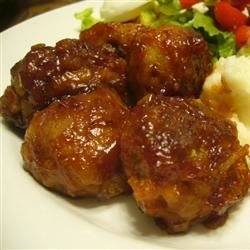

Meatballs
<<<<<<< HEAD

=======
 >>>>>>> f6cc9af97d5b75734607da147866ac01b495ed2c
>>>>>>> f6cc9af97d5b75734607da147866ac01b495ed2c
Description
Round pieces of meat
Ingredients
- 5 pounds Italian meatballs
- 1 (10.75 ounce) can condensed cream of mushroom soup
- ¾ cup water
- 2 cups sour cream
Steps
- HCombine meatballs, mushroom soup, water, and sour cream. Cover and refrigerate overnight so that the meatballs can absorb the flavors.
- Pour the mixture into a slow cooker and heat until the meatballs are heated through. Serve hot.
index
Lasagna
Pizza